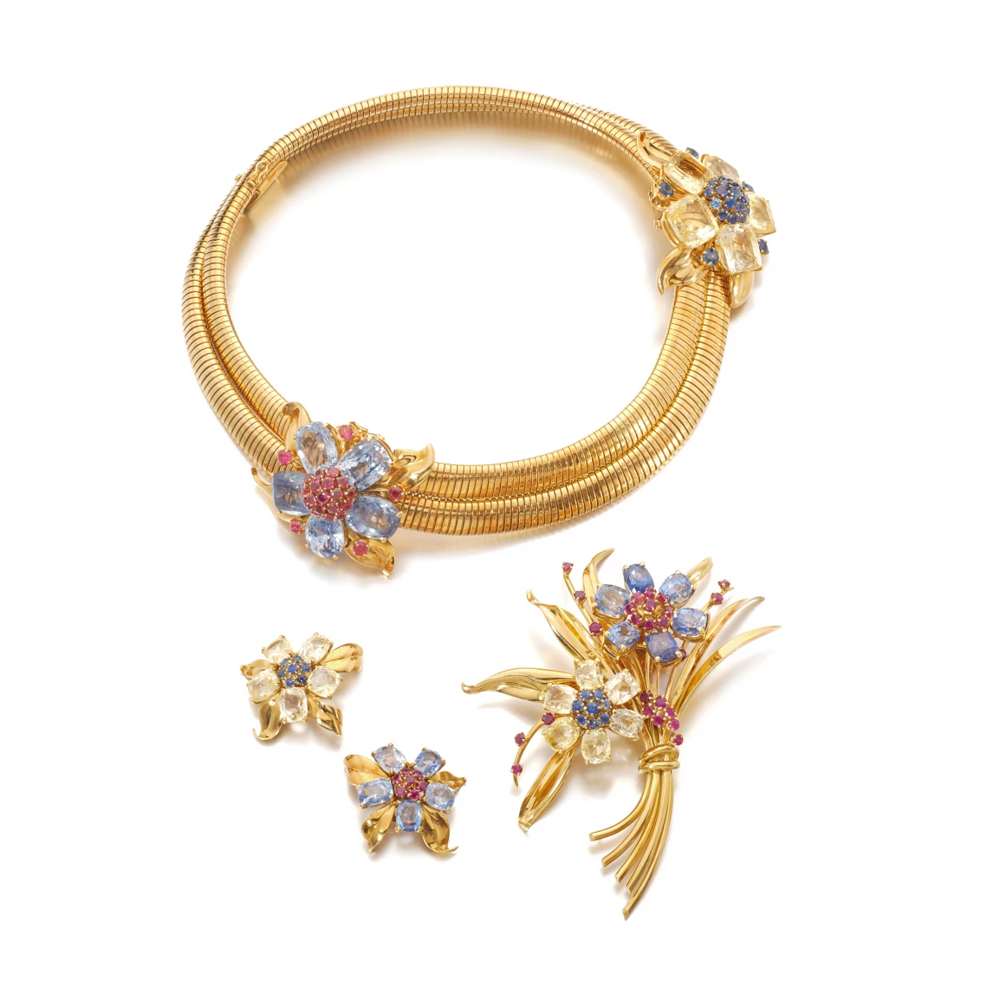
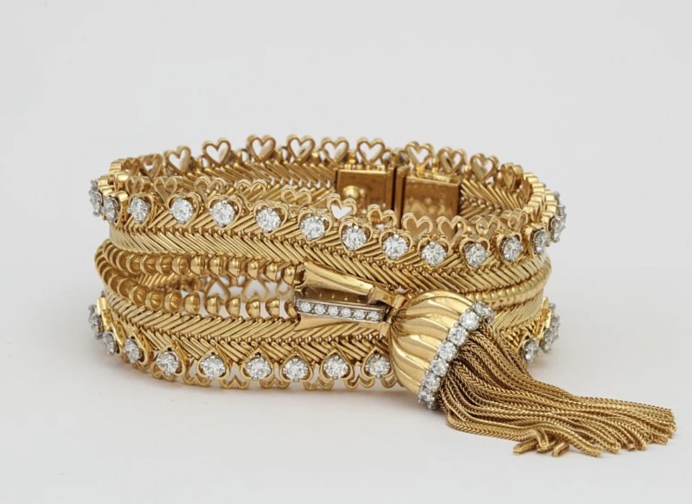
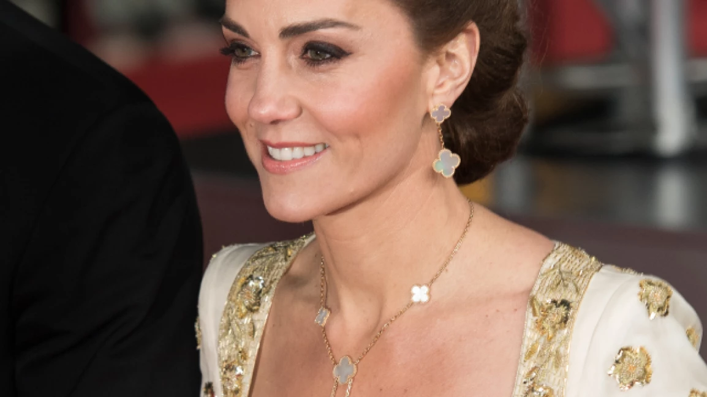
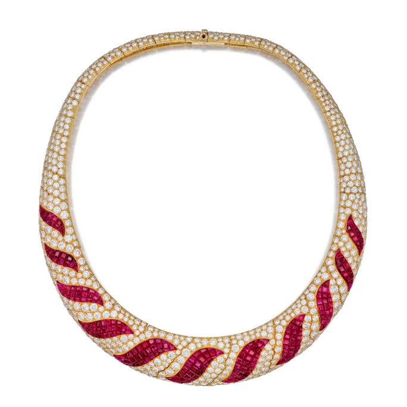
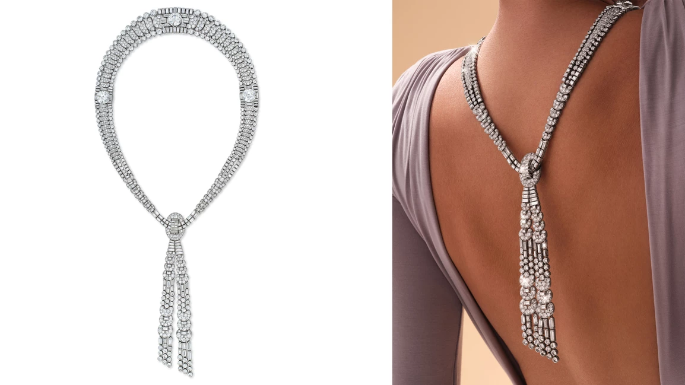

譯自 Gemma Champ · Sotheby's
在珠寶界中，能與梵克雅寶比肩的品牌寥寥可數，其藝術造詣與歷史底蘊更是無可比擬。讓我們細探這家百年品牌最具代表性的項鏈設計，一窺這些珍品的收藏之道。
品牌源起：一段美麗邂逅
梵克雅寶 Passe-Partout 項鏈 | 梵克雅寶 Zip 項鏈 | 梵克雅寶 Alhambra 項鏈 | 梵克雅寶的標誌性工藝
品牌源起：一段美麗邂逅
1896 年，梵克雅寶在巴黎最富盛名的旺多姆廣場綻放光彩，以非凡的寶石、匠心獨具的工藝，以及富有想像力的設計，旋即贏得上流社會的青睞。品牌的誕生源於一段浪漫姻緣：1895 年，寶石商人的千金艾斯特爾·雅寶（Estelle Arpel）與寶石切割師和鑽石經紀商之子阿爾弗萊德·梵克（Alfred Van Cleef）共諧連理。這對璧人因對珍寶的共同熱愛而結緣，更攜手將這份熱情昇華為藝術，與雅寶的三位兄弟一同創立了這個傳奇品牌。
寶石世家的專業底蘊成就出梵克雅寶最令人嚮往的珠寶臻品。品牌以創新的鑲嵌工藝、對孔雀石、瑪瑙等硬寶石的巧妙運用，以及以寶石和琺瑯獨特色彩見稱的設計風格而聞名。
梵克雅寶的珠寶系列包羅萬象，從璀璨奪目的鑽石耳環到精妙絕倫的隱藏式時計，無一不是匠心之作。在眾多傑作中，品牌的項鏈與頸飾尤為出眾，將巴黎的優雅風韻與精湛工藝完美融合，在高級珠寶界中獨樹一幟。現在就讓我們一同探索這些最受藏家傾心的經典設計。
梵克雅寶 Passe-Partout 項鏈
「Passe-Partout 」項鏈在 1938 年問世，是梵克雅寶創新工藝的早期代表作。這款精妙絕倫的作品由軟管形結構鏈條組成，設有隱藏式滑軌，可靈活搭配鑲有藍寶石、紅寶石和鑽石的可拆卸花形別針，成為項鏈、短項鏈、手鐲，甚至腰帶。
這款原創設計在紐約世界博覽會首次登場，以「嶄新的曙光」為主題，展現至今仍為梵克雅寶所推崇的創新精神。多年來，這款設計雖幾經演繹，但每個別針皆別具風韻，精心鑲嵌的珍貴寶石為靈動的鏈條增添璀璨光彩。

梵克雅寶藍寶石、黃寶石及紅寶石「PASSE-PARTOUT」套裝，約 1939 至 1940 年製，以 279,400 瑞士法郎成交。
梵克雅寶 Zip 項鏈
在梵克雅寶所有項鏈中，「Zip」項鏈可謂最負盛名，也最見工藝之精湛。此設計在 1938 年誕生，創作靈感來自當時方興未艾的時裝拉鏈，出自時任藝術總監、艾斯特爾·雅寶與阿爾弗萊德·梵克的千金雲妮·普伊桑（Renée Puissant）之手。
直至 1950 年，這個巧思才最終臻於完美。這款傑作以金或鉑金打造，以編織金質人字紋營造織物般的質感，邊緣綴以精美寶石，並飾以華麗的流蘇作為拉鍊頭。秉承梵克雅寶一貫的多變風格，這款設計可隨心轉換：打開可作手鏈，閉合則成項鏈。這個經典設計在蘇富比拍賣會上屢創佳績，深受藏家青睞。2023 年，一款黃金鑽石版本以 355,600 瑞士法郎成交。

梵克雅寶「ZIP」黃金及鑽石項鏈，以 355,600 瑞士法郎成交。
梵克雅寶 Alhambra 項鏈
時至今日，Alhambra 項鏈不僅是梵克雅寶最受歡迎的設計，更堪稱全球最備受推崇的高級珠寶項鏈。這個系列以四葉草圖案為標誌，以細緻鏈條相連，提供多種材質與長度選擇。每個四葉草圖案都以金珠勾勒輪廓，鑲嵌孔雀石、珍珠母、縞瑪瑙和虎眼石等半寶石。
四葉草寓意幸運，自 1920 年代起便成為梵克雅寶的經典設計元素，為品牌增添一份神秘浪漫的魅力。艾斯特爾與阿爾弗萊德的侄子雅克·雅寶（Jacques Arpels）更有一個溫馨習慣，常將親手採摘的四葉草饋贈員工，寄予祝福之意。

英國威爾斯王妃凱薩琳佩戴梵克雅寶 Alhambra 系列項鏈與耳環。
直至 1968 年，Alhambra 系列才正式問世，首款作品是一條由二十個四葉草圖案串連而成的長項鏈，設計靈感源自西班牙格拉納達阿爾罕布拉宮中摩爾風格的四瓣圖案。這款設計一經推出便風靡一時，摩納哥王妃格蕾絲（Princess Grace of Monaco）和伊莉莎白·泰勒（Elizabeth Taylor）等名流都對其鍾愛有加。
時至今日，Alhambra 系列依然備受追捧，其低調優雅又極具辨識度的設計，無論是搭配簡約的牛仔褲與 T 恤，還是華麗的紅毯禮服，都能展現獨特魅力。這個系列深受名人雅士歡迎，英國皇室成員、瑪格特·羅比（Margot Robbie）、海蒂·克魯姆（Heidi Klum）等眾多星光熠熠的面孔，都是忠實愛好者。
這個經典設計更衍生出豐富多樣的珠寶作品，從長鏈到頸飾、手鏈到戒指耳環，以金屬鏈環和鑽石鑲嵌重新演繹，甚至化身為蝴蝶與葉片等優美圖案。
在蘇富比，Alhambra 系列一向是備受矚目的焦點，無論是拍賣會場還是 Buy Now 網上平台，都深受藏家追捧。
梵克雅寶的標誌性工藝
除了這些經典項鏈，梵克雅寶亦創作了無數令人驚歎的高級珠寶項鏈與頸飾，以其創新的鑲嵌工藝和獨特的設計元素彰顯品牌特色。其中最為矚目的當屬「隱密式鑲嵌」工藝，這項獨特技術能將寶石完美嵌入，巧妙隱藏傳統可見的金屬鑲爪與鑲座。這種工藝營造出如同一片璀璨紅寶石或藍寶石的奪目效果，數十年來一直是品牌高級珠寶的經典工藝。2024 年 4 月，一條運用此工藝的精美項鏈在蘇富比以 673,100 美元成交。

梵克雅寶「隱密式鑲嵌」紅寶石及鑽石項鏈，以 673,100 美元成交。
另一個梵克雅寶的特色是創造如織物般柔美流暢的設計。「Zip」項鏈固然是其中最負盛名的代表作，但品牌的流蘇與領結設計同樣令人驚豔。2024 年 6 月，一條罕見的 1929 年「Tie」鑽石項鏈以超出估價三倍的價格成交，最終以 360 萬美元落槌。

梵克雅寶極其重要及罕有的「Tie」鑽石項鏈，以 3,600,000 美元成交。
雪花、花卉、精靈、芭蕾舞者和蝴蝶的經典設計元素經常在品牌的項鏈作品中出現。不過，藏家最引頸以盼的大概是品牌稱為「個性寶石」（pierres de caractères）作品。
作為一個植根於寶石世家的品牌，梵克雅寶的高級珠寶系列只選用最非凡的寶石。在蘇富比拍賣史上第二高價的梵克雅寶項鏈，便是這種追求極致的絕佳典範：精美的雕刻祖母綠配以鑽石、縞瑪瑙和紅寶石，可靈活轉換為兩枚胸針，充分展現品牌一貫的多變特色。
這件作品集結梵克雅寶項鏈的精髓，最終以超過 210 萬美元成交，再次印證這家珠寶世家在收藏界的超卓地位。
如欲探索更多梵克雅寶的精美項鏈，密切留意蘇富比 Buy Now 網上平台。